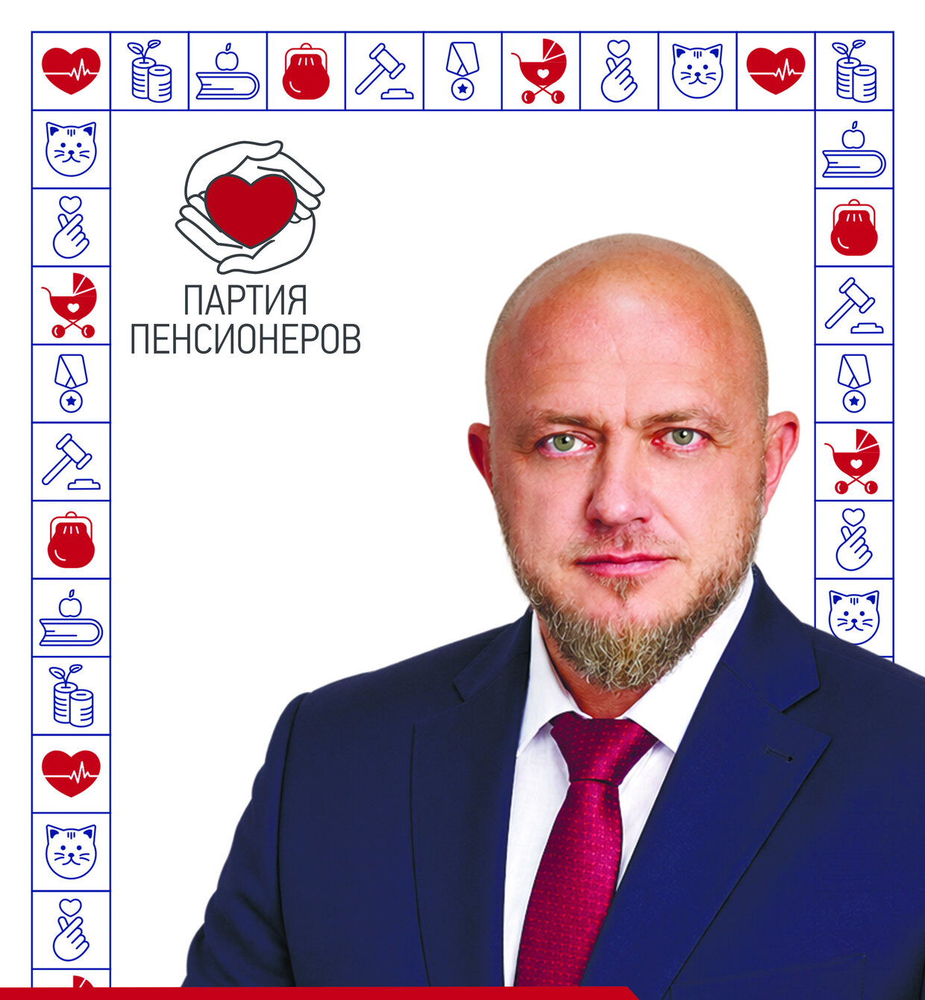

КАШИРИН Денис✓
ПРОГРАММА НОРМАЛЬНОЙ ЖИЗНИ
ГОЛОСУЙ 20 сентября ЗА БУДУЩЕЕ
Изготовитель: ООО «Производственно — коммерческая фирма «Абсолют», 644024, г.Омск, ул. Декабристов, д. 45, к.1, ИНН 5504063263.
Заказчик: кандидат в депутаты Законодательного Собрания Омской области восьмого созыва по одномандатному избирательному округу № 11 Каширин Денис Сергеевич.
Оплачено из средств избирательного счета кандидата. Тираж 1000 экз. Дата выпуска: 01.09.2026 г.